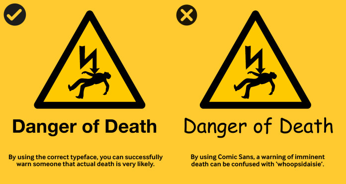

On this page
Typeface influences how meaning is constructed and interpreted in design. Thoughtful typographic choices contribute to clearer, more deliberate visual communication.

| Important Terms | What it is | What it controls | Example |
|---|---|---|---|
| Typeface | The design of the letterforms | Visual style of characters | Inter, Helvetica, Garamond |
| Font | A specific version of a typeface | Weight, style, size | Inter Bold 16px |
| Typography | The practice of using type | Readability, tone, layout | Choosing Inter, spacing, sizes |
| Font hierarchy | Visual ranking of text | What users read first | H1 > H2 > Body > Caption |
| Font family | A group of related fonts within the same typeface | Consistency across weights and styles | Ultralight, light, Regular, Bold, Italic, Condensed |
| Major Typeface Classifications | Key Traits / Features | Emotional / Visual Tone | Common Uses / Notes | Examples |
|---|---|---|---|---|
| Serif | Small lines/strokes at ends of letters, variable contrast | Traditional, formal, readable | Books, print, editorial, long-form text | Times New Roman, Garamond |
| Slab Serif | Thick, block-like serifs, low contrast | Bold, strong, modern-traditional | Posters, branding, headlines, display | Rockwell, Clarendon |
| Sans-Serif | No serifs, clean lines, often uniform strokes | Neutral, modern, minimal | UI, digital interfaces, signage, branding | Helvetica, Arial, Roboto |
| ~~Humanist Sans~~ | Calligraphic influence, open apertures, varied widths | Warm, approachable, readable | UI, print, signage where friendliness is needed | Gill Sans, Frutiger, Calibri |
| Neo-Grotesque | Clean, mechanical, low contrast, less personality | Neutral, technical, precise | Corporate branding, UI, technical documents | Helvetica, Akzidenz-Grotesk |
| Geometric Sans | Based on geometric shapes (circles, squares), symmetrical | Modern, minimalist, rigid | Logos, display, tech branding | Futura, Gotham |
| Display / Decorative | Highly stylized, artistic, unique forms | Expressive, decorative, attention-grabbing | Posters, branding, headings, short text | Papyrus, Comic Sans, Lobster |
| Script / Handwriting | Imitates handwriting, cursive connections | Elegant, personal, informal | Invitations, logos, greeting cards | Brush Script, Pacifico |
| Monospaced / Fixed-width | Every character same width | Technical, retro, coding-friendly | Code editors, terminals, typewriter-style designs | Courier, Consolas, SF Mono |
| Blackletter / Gothic | Dense, ornate, medieval-inspired strokes | Historic, formal, decorative | Certificates, logos, historical reproduction | Fraktur, Old English Text |
Typeface
- Gothic (Blackletter)Gothic Blackletter is significant for its deep historical roots in medieval manuscripts, its role in early printing
- GaramondThe embodiment and peak of the classical Renaissance calligraphic tradition.
- DidotUse Didot when you want elegance and authority — but only where precision and scale can support it.
- Caslon EgyptianA blunt, utilitarian typeface that rejected classical elegance in favour of function, marking a radical break from elite typographic traditions.
- FuturaA geometric, optimistic typeface that embodies early modernist faith in progress, reason, and universality.
- Times New RomanA transitional serif typeface that embodies institutional authority, editorial objectivity, and the quiet standardisation of knowledge.
- HelveticaA neutral, highly legible typeface designed to disappear behind the message, prioritising clarity, order, and universality over expression.
- RobotoA clean, neutral, and highly functional typeface designed to feel modern, friendly, and invisible while supporting digital interfaces.
- San FranciscoA neutral, highly legible system typeface built for clarity, precision, and seamless digital use.
- Google SansA modern, neutral, and highly legible sans-serif designed for digital clarity and versatility.
- Comic SansA casual, informal typeface designed to feel friendly, human, and unintimidating rather than formal or authoritative.
Finished this lecture?This lecture has 11 parts. It counts as complete once you've finished this page and all 11 parts: 0 of 11 done.